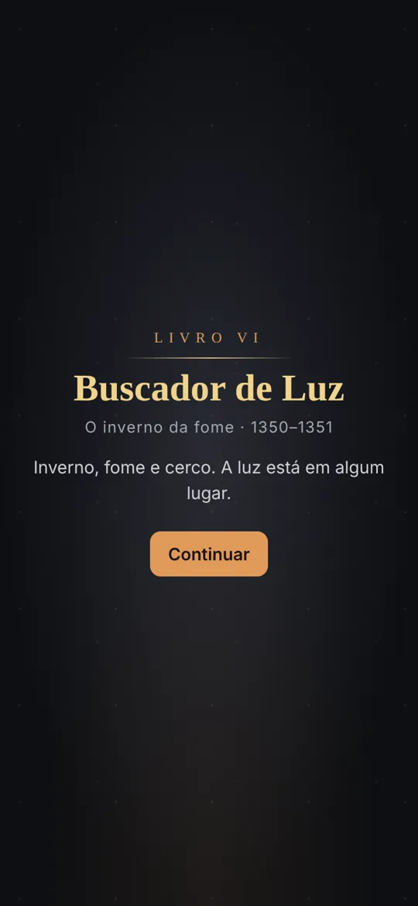
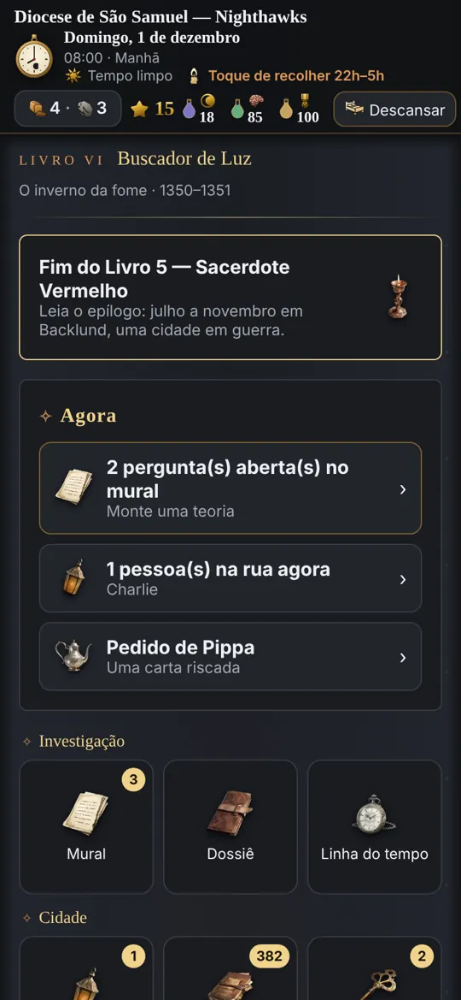
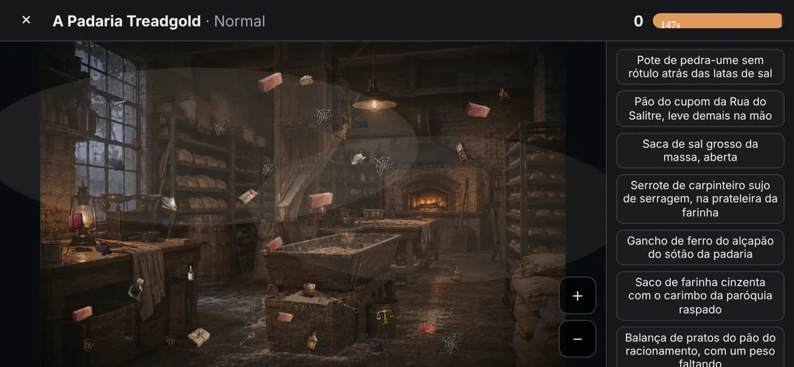
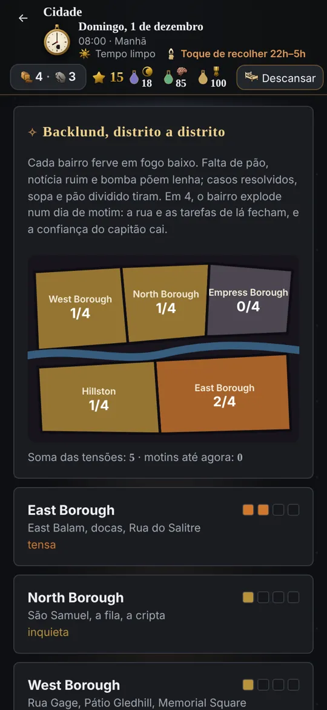
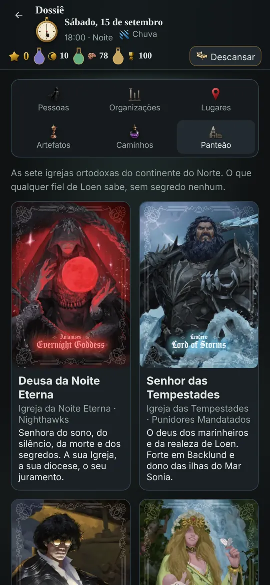

Seis livros, 121 casos
A história acompanha os volumes da obra. Cada livro tem cidade, equipe, mecânicas e até o visual da tela próprios: o jogo muda de cor e de clima enquanto você avança.
Palhaço
Tingen · 1349 · 20 casosSem Rosto
Backlund · 1349 · 23 casosViajante
Pritz, o mar e Bayam · 18 casosImortal
Backlund · 1350 · 18 casosSacerdote Vermelho
Backlund em guerra · 20 casosBuscador de Luz
Backlund sitiada · 22 casosEm breve
O Enforcado e O LoucoInvestigar, deduzir, sobreviver
Mais de cem cenários pintados, de padarias de cortiço a criptas de catedral, cheios de objetos escondidos.
Junte fatos, puxe fios e acuse. Errar a pessoa tem consequência.
Pressione, apresente provas, use poderes Beyonder para fazer o suspeito sonhar de olhos abertos.
Cifras, grades lógicas, gazuas, livros-caixa adulterados, segredos de cofre, contradições em depoimentos.
Insone ou Coletor de Cadáveres: beba as poções, atue o papel e suba da Sequência 9 à 6.
Rotina, plantão no Portão de Chanis, conversas de rua, boatos, jornal do dia e a crônica da obra mês a mês.
Dezenas de escolhas morais que reaparecem semanas depois, para o bem ou para o mal.
Toque de recolher, pão e carvão racionados, distritos à beira do motim e noites de bombardeio.
Um narrador grave lê diálogos e perguntas, com timbre próprio para cada personagem.
Como o jogo se parece





Como instalar no Android
O jogo não está na Play Store: você instala o arquivo direto. Leva um minuto.
- Baixe o arquivo.
Toque em "Baixar para Android" no celular. O arquivo termina em
.apk. - Abra o download.
Pela notificação ou pelo app "Arquivos" / "Downloads".
- Permita a instalação.
Na primeira vez o Android pede para permitir apps "desta fonte" (o navegador ou o gerenciador de arquivos). Ative e volte.
- Instale e jogue.
Se o Play Protect avisar que o app é desconhecido, escolha "Instalar mesmo assim": ele só não está na loja.
- Atualizar é igual.
Baixe a versão nova e instale por cima. O progresso continua salvo.
Nada sai do seu celular
O app não pede permissão de internet. Tudo roda dentro do aparelho.
Não há conta, anúncio, rastreamento nem envio de dados. O progresso fica só no celular.
Todas as versões têm a mesma assinatura, por isso atualizam por cima sem perder o save.
SHA-256 da versão {{VERSAO}}: